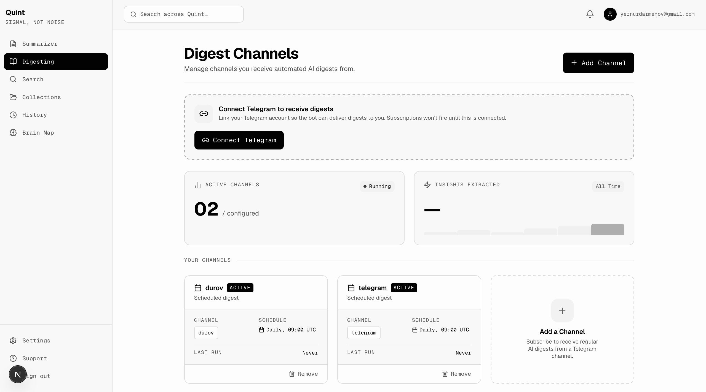
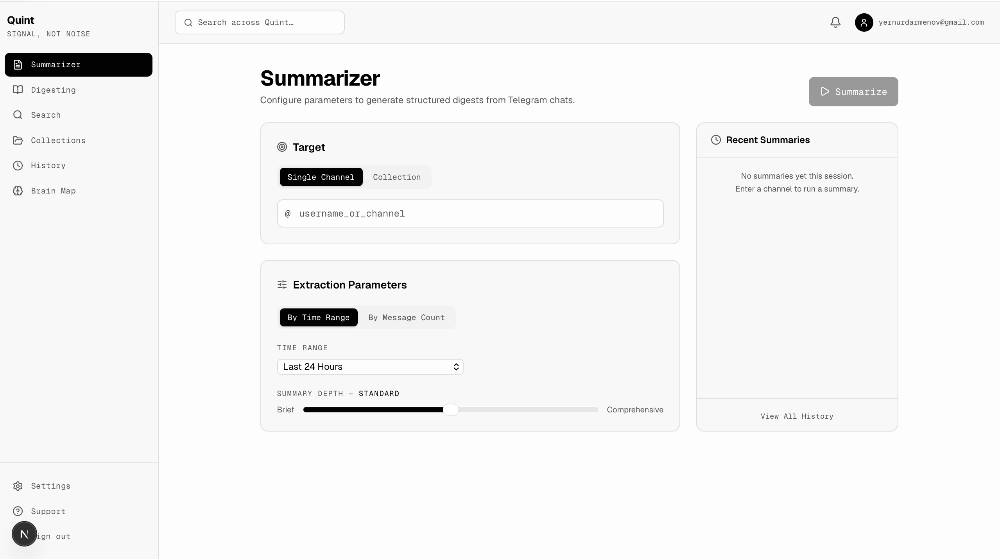

Summarize any chat
Ask for the last 100 messages, 1,000 messages, one day, or one week. Quint turns the thread into decisions, facts, links, and open questions.
Telegram, without the noise
Quint lives inside Telegram and turns overloaded chats, channels, and work groups into clear summaries, useful digests, and semantic search across everything you follow.


Built for information overload
Ask for the last 100 messages, 1,000 messages, one day, or one week. Quint turns the thread into decisions, facts, links, and open questions.
Combine channels, work groups, and communities into a single digest that notifies you only when something valuable appears.
Find information even when you do not remember the exact words. Search across several Telegram groups and channels by intent.
Telegram-native workflow
Add the Telegram channels, groups, or chats you rely on.
Choose time ranges, message counts, or digest frequency.
Get summaries, alerts, and meaning-based answers in seconds.
Private beta
We are opening Quint to Telegram-heavy teams, founders, investors, researchers, and operators who cannot afford to miss important context.